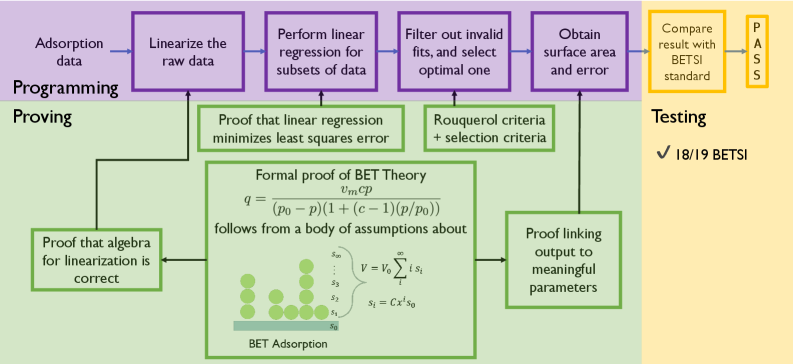
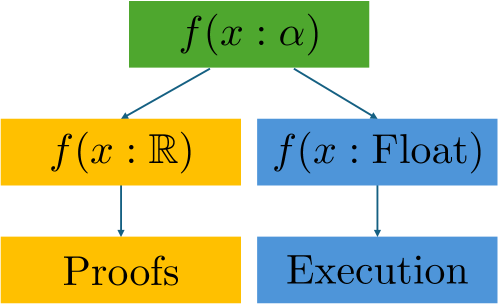

Implements a formally verified BET surface-area analysis pipeline in Lean 4 with correctness proofs over the reals.
Abstract
The Brunauer--Emmett--Teller (BET) method is a standard tool for estimating surface areas from adsorption isotherms, yet practical implementations involve multiple algorithmic steps whose correctness is rarely made explicit. In this work, we present a fully executable and formally verified BET analysis pipeline implemented in the Lean~4 theorem prover. Our formalization covers the complete BET Surface Identification (BETSI)-style workflow, including window enumeration, monotonicity checks, knee selection, and linear regression. We carry out computations in floating-point arithmetic and develop the corresponding correctness proofs over the real numbers, using a shared polymorphic implementation that supports both. On the proof side, we show that the regression coefficients returned by the algorithm agree with their specification-level definitions and minimize the least-squares error under the stated assumptions. We also formalize the algebraic derivation of the BET linearized expression and connect that result directly to the executable analysis pipeline. We further prove that the window enumeration is sound and complete, and that the admissibility checks and knee-based selection satisfy their formal specifications. We evaluate the implementation against the BETSI reference method on benchmark adsorption isotherms. Compared to BETSI, LeanBET agrees to machine precision for 18 of the 19 isotherms, with only a 0.03\% deviation for the UiO-66 dataset. This demonstrates that a scientific computing workflow can be built in Lean, yielding both formal verification guarantees and numerical agreement with an established Python reference implementation.
Problem
The BET method for estimating surface areas from adsorption isotherms involves multiple algorithmic steps whose correctness is rarely made explicit, leading to reproducibility issues across implementations. No prior work formally verified the complete BET analysis pipeline.
Approach
LeanBET implements the full BETSI-style BET analysis workflow in Lean 4, including window enumeration, monotonicity checks, knee selection, and linear regression. The implementation uses polymorphic functions that support both floating-point execution and real-number proofs. Correctness proofs cover regression coefficient specification, least-squares optimality, algebraic derivation of the BET linearized expression, and soundness/completeness of window enumeration.

Figure 1 : Overview of the formally verified BET analysis pipeline. The executable algorithm (top row) transforms adsorption data through BET linearization, windowed linear regression, and BETSI-style filtering to compute surface area and error metrics. Each computational step is paired with a corresponding formal proof (bottom blocks) establishing algebraic correctness of the BET linearization, l

Figure 2 : Polymorphic functions link proofs (over idealized Real numbers) with execution (over floating point numbers), using a polymorphic function f that uses generic type \alpha . To set up proofs, \alpha is specialized to Real, and to set up executions, \alpha is specialized to Float. Figure taken from [ 20 ] with permission.
Results
LeanBET agrees with the BETSI Python reference implementation to machine precision for 18 of 19 benchmark isotherms, with only a 0.03% deviation for UiO-66. The work demonstrates that a scientific computing workflow can be built in Lean yielding both formal verification guarantees and numerical agreement with established reference software.